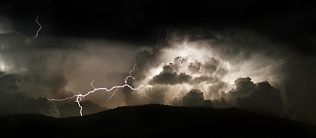

京城已入秋，天气凉爽不少。这几日晚上总是睡得不实，醒着听窗外虫鸣，在夜晚的沉寂中分外清晰。有时睡着了，又突然被雷声惊醒。闭幕式前一晚的雷声就极恐怖，像要把楼劈开，一夜闪电惊雷，雨却没下几滴，估计又是驱雨弹的成果。闭幕当天果然没雨，第二天大雨才姗姗来迟。只十来天，我们就成功地延迟了两场大雨。这真是这个国家“人定胜天”的伟大胜利。
前夜又被风声吵醒，不知道哪家的窗户在风里摇摇欲坠，起来关窗，风吹进来，眼里进了沙。嗓子干得发疼。奇怪下了几场雨，这个城市依然不改其干燥的本性。昨晚又听见虫在叫个不停，不知怎么想到几个月前看过的一部动画片《秋蝉鸣泣之时》。一个原本叫鬼隐村的村落，村民为了阻止政府因建水坝而浸没村庄，引发了一系列暴力血腥事件。一个被诅咒的地方，永远宿命的轮回。在这些个一日蝉鸣一日惊雷的夜晚，这个故事突然有了某种不知从何而来的暗合，让我醒着做了场噩梦。
